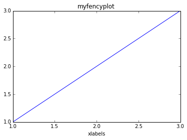

Build a PDF
import os
from ecoop.ecooputil import shareUtil
from ecoop.printer import openDocument, closeDocument, addSection, addSubSection, addFigure
from ecoop.epimagic import *
- Start to write the latex Document
ID = util.get_id('test/myfencypdf')
document = openDocument()
session data directory : test/myfencypdf_Saturday_26_April_2014_05_19_46_AM
%%writefileref {ID}/abstract.txt epinux
here is my little abstract, sorry it is really short ... but it is just a test to show you how easy is to use the IPython notebook with LaTex to build a nice PDF document.
Writing test/myfencypdf_Saturday_26_April_2014_05_19_46_AM/abstract.txt
'added references for user epinux'
abstract = addSection(name='Abstract', data=os.path.join(ID,'abstract.txt'))
%%writefileref {ID}/first_paragraph.txt epinux
Here we are telling a story about our experience building a simple PDF document.
The text inside this cell will go in the first paragraph (chapter?) of our PDF document.
Writing test/myfencypdf_Saturday_26_April_2014_05_19_46_AM/first_paragraph.txt
'added references for user epinux'
import numpy as np
import matplotlib.pyplot as plt
x = np.array([1,2,3])
y = np.array([1,2,3])
plt.plot(x,y,'-')
plt.xlabel('xlabels')
plt.title('myfencyplot')
plt.show()
plt.savefig(os.path.join(ID,'myfencyplot.png'))

<matplotlib.figure.Figure at 0x7ffbeda42e10>
fig1 = addFigure(img=os.path.join(ID,'myfencyplot.png'), name='myfencyplot',metadata='')
firstparagraph = addSubSection(name='First paragraph', data=os.path.join(ID,'first_paragraph.txt'), fig=fig1)
closedDocument = closeDocument()
texfile=''
texfile += document
texfile += abstract
texfile += firstparagraph
texfile += closedDocument
pdf = os.path.join(ID,'test.tex')
f = open(pdf,'w')
f.write(texfile)
f.close()
!pdflatex -output-directory={ID} {pdf}
This is pdfTeX, Version 3.1415926-2.4-1.40.13 (TeX Live 2012/Debian)
restricted write18 enabled.
entering extended mode
(./test/myfencypdf_Saturday_26_April_2014_05_19_46_AM/test.tex
LaTeX2e <2011/06/27>
Babel <v3.8m> and hyphenation patterns for english, dumylang, nohyphenation, et
hiopic, farsi, arabic, pinyin, croatian, bulgarian, ukrainian, russian, slovak,
czech, danish, dutch, usenglishmax, ukenglish, finnish, french, basque, ngerma
n, german, swissgerman, ngerman-x-2012-05-30, german-x-2012-05-30, monogreek, g
reek, ibycus, ancientgreek, hungarian, bengali, tamil, hindi, telugu, gujarati,
sanskrit, malayalam, kannada, assamese, marathi, oriya, panjabi, italian, lati
n, latvian, lithuanian, mongolian, mongolianlmc, nynorsk, bokmal, indonesian, e
speranto, coptic, welsh, irish, interlingua, serbian, serbianc, slovenian, friu
lan, romansh, estonian, romanian, armenian, uppersorbian, turkish, afrikaans, i
celandic, kurmanji, polish, portuguese, galician, catalan, spanish, swedish, th
ai, loaded.
(/usr/share/texlive/texmf-dist/tex/latex/base/article.cls
Document Class: article 2007/10/19 v1.4h Standard LaTeX document class
(/usr/share/texlive/texmf-dist/tex/latex/base/size10.clo))
(/usr/share/texlive/texmf-dist/tex/latex/tools/multicol.sty)
(/var/lib/texmf/tex/generic/babel/babel.sty
(/usr/share/texlive/texmf-dist/tex/generic/babel/english.ldf
(/usr/share/texlive/texmf-dist/tex/generic/babel/babel.def)))
(/usr/share/texlive/texmf-dist/tex/latex/blindtext/blindtext.sty
(/usr/share/texlive/texmf-dist/tex/latex/tools/xspace.sty))
(/usr/share/texlive/texmf-dist/tex/latex/graphics/graphicx.sty
(/usr/share/texlive/texmf-dist/tex/latex/graphics/keyval.sty)
(/usr/share/texlive/texmf-dist/tex/latex/graphics/graphics.sty
(/usr/share/texlive/texmf-dist/tex/latex/graphics/trig.sty)
(/usr/share/texlive/texmf-dist/tex/latex/latexconfig/graphics.cfg)
(/usr/share/texlive/texmf-dist/tex/latex/pdftex-def/pdftex.def
(/usr/share/texlive/texmf-dist/tex/generic/oberdiek/infwarerr.sty)
(/usr/share/texlive/texmf-dist/tex/generic/oberdiek/ltxcmds.sty))))
(/usr/share/texlive/texmf-dist/tex/latex/wrapfig/wrapfig.sty)
(/usr/share/texlive/texmf-dist/tex/latex/hyperref/hyperref.sty
(/usr/share/texlive/texmf-dist/tex/generic/oberdiek/hobsub-hyperref.sty
(/usr/share/texlive/texmf-dist/tex/generic/oberdiek/hobsub-generic.sty))
(/usr/share/texlive/texmf-dist/tex/generic/ifxetex/ifxetex.sty)
(/usr/share/texlive/texmf-dist/tex/latex/oberdiek/kvoptions.sty)
(/usr/share/texlive/texmf-dist/tex/latex/hyperref/pd1enc.def)
(/usr/share/texlive/texmf-dist/tex/latex/latexconfig/hyperref.cfg)
(/usr/share/texlive/texmf-dist/tex/latex/url/url.sty))
Package hyperref Message: Driver (autodetected): hpdftex.
(/usr/share/texlive/texmf-dist/tex/latex/hyperref/hpdftex.def
(/usr/share/texlive/texmf-dist/tex/latex/oberdiek/rerunfilecheck.sty))
(/usr/share/texlive/texmf-dist/tex/latex/fancyvrb/fancyvrb.sty
Style option: `fancyvrb' v2.7a, with DG/SPQR fixes, and firstline=lastline fix
<2008/02/07> (tvz)) (/usr/share/texlive/texmf-dist/tex/latex/base/inputenc.sty
(/usr/share/texlive/texmf-dist/tex/latex/base/utf8.def
(/usr/share/texlive/texmf-dist/tex/latex/base/t1enc.dfu)
(/usr/share/texlive/texmf-dist/tex/latex/base/ot1enc.dfu)
(/usr/share/texlive/texmf-dist/tex/latex/base/omsenc.dfu))) (./test.aux)
(/usr/share/texlive/texmf-dist/tex/context/base/supp-pdf.mkii
[Loading MPS to PDF converter (version 2006.09.02).]
) (/usr/share/texlive/texmf-dist/tex/latex/oberdiek/epstopdf-base.sty
(/usr/share/texlive/texmf-dist/tex/latex/oberdiek/grfext.sty)
(/usr/share/texlive/texmf-dist/tex/latex/latexconfig/epstopdf-sys.cfg))
(/usr/share/texlive/texmf-dist/tex/latex/hyperref/nameref.sty
(/usr/share/texlive/texmf-dist/tex/generic/oberdiek/gettitlestring.sty))
(./test.out) (./test.out)
(./test/myfencypdf_Saturday_26_April_2014_05_19_46_AM/abstract.txt)
(./test/myfencypdf_Saturday_26_April_2014_05_19_46_AM/first_paragraph.txt)
<test/myfencypdf_Saturday_26_April_2014_05_19_46_AM/myfencyplot.png, id=4, 433.
62pt x 289.08pt>
<use test/myfencypdf_Saturday_26_April_2014_05_19_46_AM/myfencyplot.png>
Overfull hbox (3.21652pt too wide) in paragraph at lines 19--20
[][]
Package hyperref Warning: Empty destination name,
(hyperref) using `UNDEFINED' on input line 20.
[1{/var/lib/texmf/fonts/map/pdftex/updmap/pdftex.map} <./test/myfencypdf_Saturd
ay_26_April_2014_05_19_46_AM/myfencyplot.png>]
(test/myfencypdf_Saturday_26_April_2014_05_19_46_AM/test.aux) )
(see the transcript file for additional information)pdfTeX warning (dest): name
{UNDEFINED} has been referenced but does not exist, replaced by a fixed one
</usr/share/texlive/texmf-dist/fonts/type1/public/amsfonts/cm/cmbx12.pfb></usr/
share/texlive/texmf-dist/fonts/type1/public/amsfonts/cm/cmr10.pfb>
Output written on test/myfencypdf_Saturday_26_April_2014_05_19_46_AM/test.pdf (
1 page, 29584 bytes).
Transcript written on test/myfencypdf_Saturday_26_April_2014_05_19_46_AM/test.l
og.